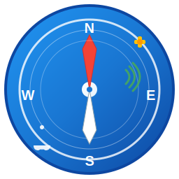

🧭 Icône NMEA Tracker Server
16x16 px

32x32 px
48x48 px
64x64 px
128x128 px
256x256 px
🎨 Éléments de design
- 🧭 Compas de navigation - Symbole central représentant la navigation maritime
- 📡 Ondes radio - Lignes courbes symbolisant les signaux NMEA/GPS
- 🛰️ Satellite GPS - Icône en haut à droite représentant le positionnement
- ⚓ Ancre marine - Symbole nautique en bas à gauche
- 🎯 Points cardinaux - N, S, E, W pour l'orientation
- 🌊 Thème bleu - Dégradé évoquant l'océan et la technologie
python create_icon.py # Génère icon.ico
pyinstaller nmea_server.spec --clean --noconfirm # Compile avec icône
Formats générés : SVG source + ICO multi-résolution (16→256px)
L'icône apparaîtra dans la barre des tâches Windows et l'explorateur de fichiers.